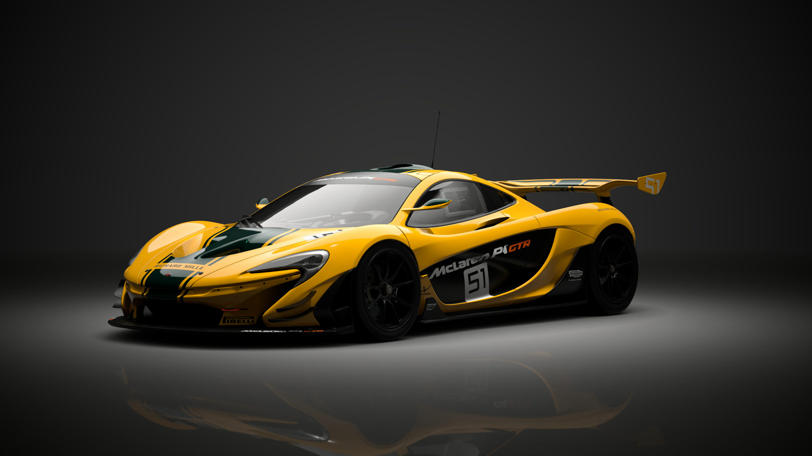
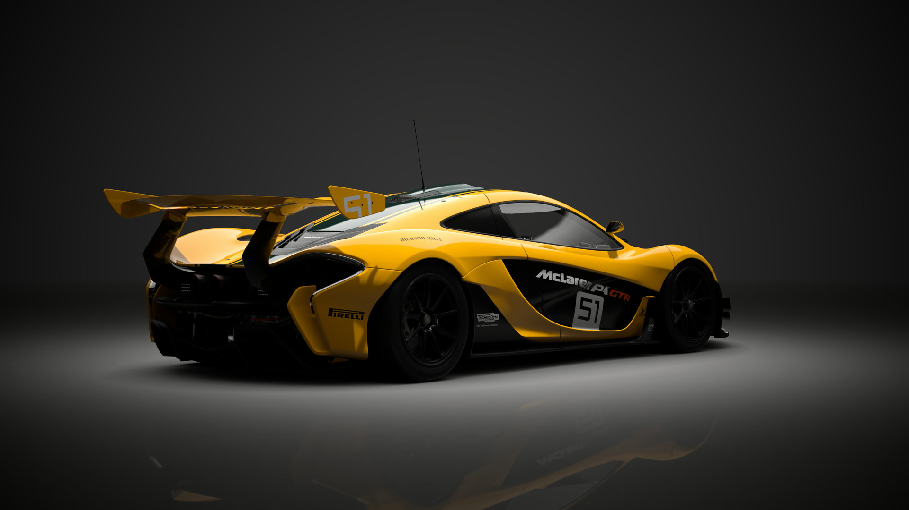
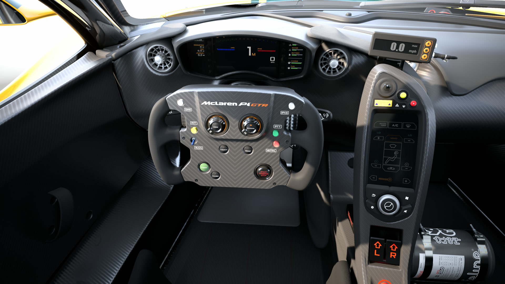

Der P1 ist nicht einfach nur der Nachfolger des legendären McLaren F1 — er ist eine kompromisslose Neuinterpretation dessen, was ein Ultimate Hypercar sein kann. Das Design folgt der Philosophie «Everything for a Reason»: Kein Element ist Dekoration, alles dient der Performance.
Die Front ist aggressiv und funktional: Die breiten Lufteinlässe kühlen Motor und Bremsen, während die Scheinwerfer minimalistisch in die Karosserie integriert sind. Der P1 wirkt wie ein LMP1-Rennwagen für die Strasse — und genau das war auch McLarens Ziel. Frank Stephenson, der Designer, nannte es «shrink-wrapped» — die Karosserie liegt wie eine zweite Haut über dem Chassis.

Der P1 setzt auf einen 3,8-Liter-V8-Biturbo-Motor, der aus McLarens Formel-1-Erfahrung stammt. Alleine leistet er 737 PS — dazu kommt ein 179 PS starker Elektromotor, der direkt in die Kurbelwelle integriert ist. Das Ergebnis: 916 PS Systemleistung und ein brutales Drehmoment von 978 Nm.
Anders als Ferrari und Porsche kann der P1 bis zu 10 Kilometer rein elektrisch fahren — allerdings im «E-Mode», der eher für leises Cruisen gedacht ist. Im «Race Mode» wird der Elektromotor zu einem Boost-Monster: Sofortiges Drehmoment ohne Turbo-Lag, perfekte Traktion beim Ausgang aus Kurven. McLaren nennt es «Instant Power Assist System» (IPAS).

Das Herzstück der Aerodynamik ist der aktive Heckflügel: Im «Race Mode» stellt er sich auf maximalen Anstellwinkel und erzeugt bis zu 600 kg Abtrieb. Beim Bremsen klappt er zusätzlich hoch und wirkt wie eine Luftbremse — das Konzept «DRS» (Drag Reduction System) aus der Formel 1, umgekehrt angewendet.
Im Cockpit herrscht Rennstrecken-Atmosphäre: Leichte Carbon-Schalensitze, minimalistisches Armaturenbrett, alles auf das Wesentliche reduziert. Das Lenkrad ist flach unten abgeschnitten — wie im F1. McLaren verzichtete bewusst auf unnötigen Luxus: keine Klimaanlage (optional), kein Sound-System (optional), keine weichen Polster. Nur eines zählt: die Rundenzeit.

Hör den charakteristischen Sound des aufgeladenen V8 — ein aggressives, scharfes Heulen bei hohen Drehzahlen.